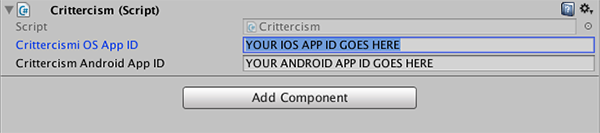

Apteligent helps developers track and manage performance of mobile applications on several platforms. For more information, see Overview and the Solution Overview.
Unity version 5.
iOS 6.0 and later
Android 2.3 and later
Download our latest Unity Plugin. The download contains the following items:
Item |
Contains |
|---|---|
|
The iOS plugin binary |
|
The Android plugin binary |
|
Init Script and the C# bindings that call into the Apteligent iOS SDK |
|
Init Script and the C# bindings that call into the Apteligent Android SDK |
|
An example app |
Drag and drop the Plugins directory into your project’s Assets folder:
A custom AndroidManifiest.xml file must be added to the {Unity Project}/Plugins/Android folder. Inside the file, verify you have the INTERNET and ACCESS_NETWORK_STATE permission in between the <manifest> ... </manifest> tags so Apteligent can send data to our servers:
<uses-permission android:name="android.permission.INTERNET"/>
<uses-permission android:name="android.permission.ACCESS_NETWORK_STATE"/>
For more granular data (optional), add the following permissions:
<uses-permission android:name="android.permission.GET_TASKS"/>
In the Unity Editor, create a new GameObject. Rename the Game Object to “Crittercism Initializer”.
Select the game object in the Hierarchy pane and attach the Apteligent script as a component.
Fill in your iOS app ID and Android app ID
The Unity IDE has several settings which impact the type of data the Apteligent SDK can report. This section will outline the effects of these settings and give recommended values for best support.
Section |
Setting Name |
Recommended Setting |
|---|---|---|
Build Settings |
Script Debugging |
ON |
Player Settings > Crash Reporting |
On .Net UnhandledException |
Silent Exit |
Player Settings > Crash Reporting |
Enable CrashReport API |
Disabled |
Player Settings > Other Settings |
Scripting Backend |
IL2CPP |
Player Settings > Other Settings |
Script Call Optimization |
Either |
Apteligent SDK Setting |
SetLogUnhandledExceptionAsCrash |
false |
Script Debugging Script Debugging may be turned on in order to get file names and line numbers in crash stack traces. Without this setting, crash stack traces will only contain class names and function names.
On .Net Unhandled Exception When set to Crash, the app will immediately exit in the event of an Unhandled Exception. In this case, a native crash (C++) will be generated by the Apteligent SDK. When set to Silent Exit, the app will gracefully exit, which allows the capture of a C# stacktrace.
Enable CrashReport API Enables built-in Unity CrashReporter API. This setting is not related to the Apteligent SDK.
Scripting Backend Selects the scripting backend for the player. Native crashes can not be captured for the Mono2x scripting backend option. Behavior in mode IL2CPP depends on the Script Call Optimization setting. (iOS only)
Script Call Optimization (iOS only) Apteligent SDK can support either option.
Scrit Call Optimization Setting |
Script Handled Exception |
Script Unhandled Exception |
Unity Engine Crash |
|---|---|---|---|
‘’Fast but no Exceptions’’ |
C# Stacktrace (Exception) |
C# Stacktrace (Crash) |
C++ Stacktrace (Crash) |
‘’Slow and Safe’’ |
C# Stacktrace (Exception) |
C# Stacktrace(1) (Exception) |
C++ Stacktrace (Crash) |
(1) If SetLogUnhandledExceptionAsCrash is set, Unhandled exceptions in Slow and Safe mode will be
logged in the Crash section on the Apteligent portal. Otherwise, they will default to the
Handled Exceptions section.
SetLogUnhandledExceptionAsCrash This is an Apteligent SDK setting that changes where unhandled exceptions are presented in the Apteligent portal. See SetLogUnhandledExceptionAsCrash API for details.
The Android Unity SDK provides additional configuration options to enable logcat collection,
and customize version names. In order to perform these configurations, open CrittercismAndroid.cs
script under Plugins/Crittercism/Crittercism_Android_Scripts directory.
Inside Init (string appID) method, instantiate a CrittercismConfig object and invoke the
SetLogcatReportingEnabled (bool) and SetCustomVersionName (string) methods. Then pass the
configuration object to the initialization call.
Here’s an example:
public static void Init (string appID)
{
CrittercismConfig config = new CrittercismConfig ();
// enable logcat collection
config.SetLogcatReportingEnabled (true);
// set version name to myCustomVersion
config.SetCustomVersionName ("myCustomVersion");
Init (appID, config);
}
Use the DidCrashOnLastLoad API to test if the previous session of
your app crashed.
bool didCrash = Crittercism.DidCrashOnLastLoad();
Unhandled JavaScript exceptions are normally reported to the Handled Exceptions
area of the Apteligent server because the app itself doesn’t crash.
Use the SetLogUnhandledExceptionAsCrash API to request Apteligent
to report unhandled JavaScript exceptions to the Crash Reports area of the
Apteligent server instead.
Crittercism.SetLogUnhandledExceptionAsCrash(value);
Crittercism.GetLogUnhandledExceptionAsCrash();
The value should be a bool, true or false.
Here’s an example of how to use SetLogUnhandledExceptionAsCrash:
void CallCriticalBusinessFunction() {
try {
SetLogUnhandledExceptionAsCrash(true);
CriticalBusinessFunction();
} finally {
SetLogUnhandledExceptionAsCrash(false);
}
}
Use the LogHandledException API to track error conditions that do not
necessarily cause a crash.
Handled exceptions may be used for tracking exceptions caught
in a try/catch statement, 3rd party library exceptions, and monitoring
areas in the code that may currently be using assertions. Handled
exceptions can also be used to track error events such as low memory warnings. For an
introduction, see Handled Exceptions.
Handled exceptions are grouped by stacktrace, much like crash reports. Handled exceptions may be viewed in the “Handled Exceptions” area of the Workspace ONE Intelligence portal.
Here’s an example of how to log a handled exception:
try {
throw new TestException();
} catch (System.Exception error) {
Crittercism.LogHandledException(error);
}
Note
We limit to sending five exceptions per minute.
Developers can set user metadata to tracking information about individual users. For an introduction, see User Name.
Setting a username will allow the ability to monitor app performance for each user. We recommend setting a username to a value that can be tied back to your customer support system.
Here’s an example of how to set a user name:
Crittercism.SetUsername("MommaCritter");
Use the BeginUserflow, EndUserflow, FailUserflow,
and CancelUserflow methods to log userflows.
User flows allow developers to track key interactions or user flows in their app such as login, account registration, and in app purchase. The Workspace ONE Intelligence SDK will automatically track application load time as a user flow. You can specify additional user flows by adding code to your application.
Beginning a user flow starts a user flow. Ending, failing, or cancelling a user flow stops a user flow. Otherwise, the user flow will be marked as crashed or timed out. If a crash occurs, all in progress user flows are marked crashed and will be reported with the crash.
All user flows will appear on Workspace ONE Intelligence portal except for cancelled user flows.
User flows with the same name are aggregated together in the portal by Workspace ONE Intelligence. Only one user flow for a given name can be in progress at a given time. If you begin a second user flow with the same name while another is in progress, the first user flow will be cancelled and the new one will take its place.
Here’s an example of how to log a single userflow:
Crittercism.BeginUserflow("login");
// Run the code you want to monitor
bool didLogin = RunMyLoginCode();
if (didLogin) {
Crittercism.EndUserflow("login");
} else {
Crittercism.FailUserflow("login");
}
Beginning a user flow tells Workspace ONE Intelligence SDK that the user flow has started. Workspace ONE Intelligence SDK starts timing the duration of the user flow and waits for the user flow to succeed, fail, or be cancelled in code.
Here’s an example of how to begin a userflow:
Crittercism.BeginUserflow("my userflow");
When beginning a userflow, you can also assign the userflow a value:
var valueInCents = 100;
Crittercism.BeginUserflow("my userflow", valueInCents);
Ending a user flow tells Workspace ONE Intelligence SDK that the given user flow has successfully completed. At this point, the user flow time is recorded, and the user flow will be reported to Workspace ONE Intelligence.
Here’s an example of how to end a userflow, which is the same as marking it as succeeded:
Crittercism.EndUserflow("my userflow");
Failing a user flow tells Workspace ONE Intelligence SDK that the given user flow has failed. At this point, the user flow time is recorded, and the user flow will be reported to Workspace ONE Intelligence.
Here’s how to mark a userflow as failed:
Crittercism.FailUserflow("my userflow");
Cancelling a user flow tells Workspace ONE Intelligence SDK that the given user flow has been cancelled. The user flow is not recorded and will not be reported to Workspace ONE Intelligence.
If a developer does not specify success, failure, or cancelled in code, then the only possible remaining final states a user flow can reach are crashed and timed out. See User Flows Final States for more information.
Here’s how to cancel a userflow:
Crittercism.CancelUserflow("my userflow");
Use the SetUserflowValue and GetUserflowValue methods to modify
the value of a userflow. The value of a userflow should be specified in
cents.
A developer may optionally set the value of each user flow. This allows stakeholders to more accurately evaluate the business impact of failing user flows. Setting user flows values within the app is most useful when the value of a user flow can change based on user interactions. One example is in-app purchases of varying quantities.
In addition to being able to specify user flows values in the code, a default user flows value may be specified in the Workspace ONE Intelligence portal. This allows changing user flows values on the fly.
int itemValueInCents = 100;
int totalValueInCents
= Crittercism.GetUserflowValue("shopping cart") + itemValueInCents;
Crittercism.SetUserflowValue("shopping cart", totalValueInCents);
Workspace ONE Intelligence SDK provides an opt-out setting that disables all reporting to Workspace ONE Intelligence. This allows developers to implement code that asks end users whether they want to opt out of Workspace ONE Intelligence. For an introduction, see Opt Out of Workspace ONE Intelligence.
Crittercism.SetOptOut (true);
bool isOptedOut = Crittercism.GetOptOut ();